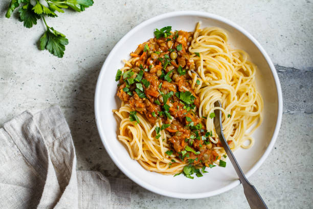

Vegan Pasta

Description
My great-great-grandmother devised this vegan pasta recipe at the turn of the century.
Ingredients
- Dried pasta of your choice
- Tomato pasta sauce - homemade or pre-bought
- Mixed herbs
- Vegan protein of your choice
- Chilli powder
Steps
- Boil the dried pasta according to the package instructions.
- Bring the pasta sauce to a simmer and add chilli powder to taste.
- Fry up vegan protein and add to the pasta sauce.
- Leave the sauce to simmer for 5 minutes.
- Drain pasta, and serve as above or however your heart desires!